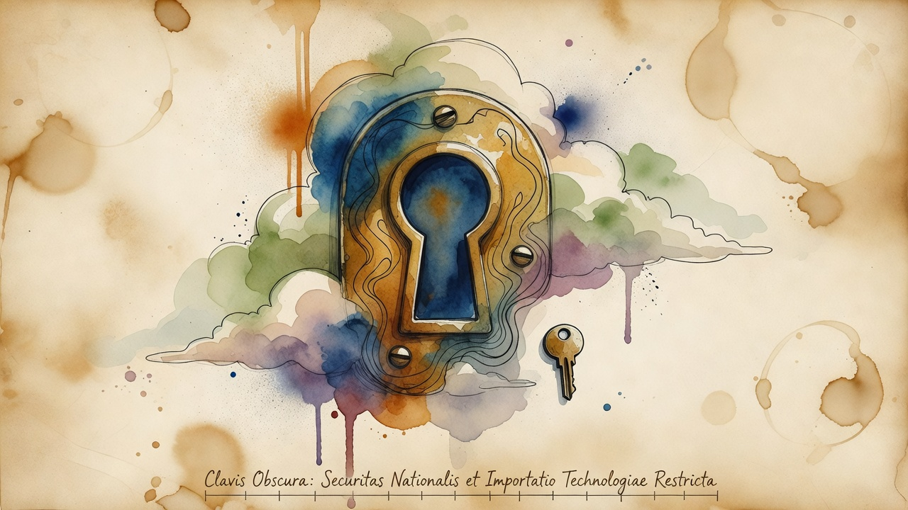

National Security & Robotics
US FCC bans Chinese humanoid and quadruped robots, citing backdoors in Unitree hardware
The U.S. Federal Communications Commission added Chinese humanoid and quadruped robots to its national security Covered List, barring imports of new units. The ban extends to connected power inverters and targets vulnerabilities already identified in Unitree hardware deployed at MIT, Princeton, and Carnegie Mellon universities.